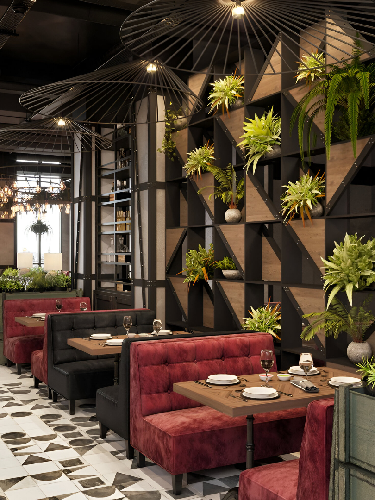

Didirikan dengan semangat menghadirkan cita rasa Nusantara yang autentik, Setia Rasa adalah restoran yang berkomitmen untuk memberikan pengalaman kuliner terbaik kepada setiap pelanggan kami.

Setia Rasa berdiri sejak tahun 2010 di kota kecil dengan tujuan sederhana: menghadirkan kelezatan masakan rumahan yang sehat dan bergizi. Seiring berjalannya waktu, kami berkembang menjadi salah satu restoran favorit keluarga dan tempat bersantap yang nyaman untuk semua kalangan.
Kunjungi kami atau pesan makanan favoritmu secara online.